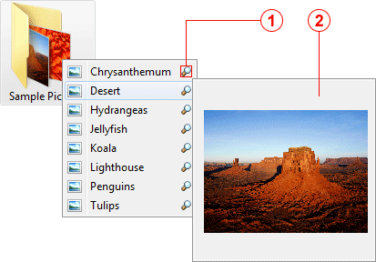

The Scope plug-in allows you to preview images in most common formats. When you highlight a graphics file, a magnifying glass pictogram will appear next to its name, then the Scope's preview pane will expand displaying a thumbnail of the image.

Magnifying Glass pictogram
Appears next to the item's name indicating that the format is supported and image can be previewed.
Preview pane
Displays the thumbnail of the image. The maximum pixel size of the thumbnail is 180 x 180.
The following graphics formats are currently supported:
Note: The Scope plug-in does not support previewing files stored inside ZIP archives.